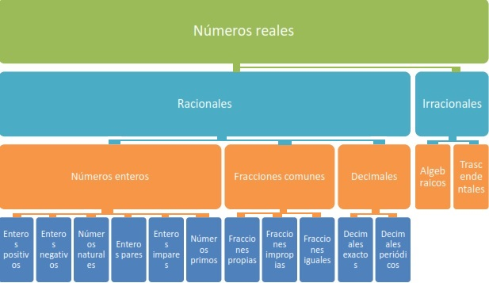

UNIVERSIDAD TÉCNICA PARTICULAR DE LOJA
Números Reales
Los números reales están formados por la unión del conjunto de los números racionales irracionales
Racionales
Números enteros (Z
Enteros positivos (Z+ 0, 1, 2, 3, ..., ∞
Enteros negativos (Z- -1, -2, -3, ..., -∞
Números naturales (N No incluye el 0 1, 2, 3, ..., ∞
Enteros pares (Son divisibles para 2 -4, -2, 10, 6, 4, -8
Enteros impares (No son divisibles para 2 -1, -3, 5, 7, 9, -11
Números primos: Número natural mayor que 1 que tiene unicamente dos divisores distintos : el mismo número y el 1 .2, 3, 5, 7, 11, 13, 17, 19, 23, 29
Fracciones comunes, como son:
Fracciones propias: El numerador es menor al denominador 2 /3 , 3 /4 , 7 /9 , 1 /2 , 4 /5 , 11 /13
Fracciones impropias: El numerador es mayor al denominador 5 /2 , 4 /3 , 9 /7 , 2 /1 , 5 /4 , 13 /11
Fracciones iguales: El numerador es igual al denominadorigual a 1 .5 /5 , 2 /2 , 3 /3 , 4 /4 , 8 /8 , 11 /11
Decimales de tipo:
Decimales exactos: El resultado del cociente es finito 0,5; 1,6; 2,5
Decimales periódicos: El resultado del cociente es finito ⅓ = 0.333..., ⅔ = 0.666...
Irracionales : No pueden ser expresados en forma de fracción .
Algebraicos: Proviene de operaciones distintas a la fracción, por ejemplo: n √... √2; √7; 5 √3; 4 √8
Trascendentales: Son representados por símbolos matemáticos .
